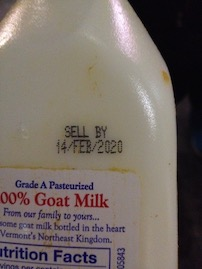
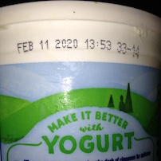
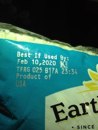

Best if Labeled By:
Understanding NYC Retail Food Waste
Ursula Kaczmarek
Open Trash Lab
why study labels & retail behavior?
yearly U.S. in-store losses of 16-43 billion pounds of food
each store pulls estimated $2300 worth of out-of-date goods daily
almost all pulled goods still consumable with limited shelf life
sources: Jonathan Bloom, American Wasteland: How America Throws Away Nearly Half of Its Food; Dana Gunders, National Resources Defense Council, Wasted: How America Is Losing Up to 40 Percent of Its Food from Farm to Fork to Landfill
why study labels & retail behavior?
understudied compared to waste at consumer level
research mostly focused on supplier interface or barriers to donation
waste occurs near end of supply chain
citizen science
data
research
citizen scientists
experienced divers recruited from freegan.info
receive training on principles of scientific research
divert documented food from landfill
data

data
db.brooklyn.insertOne(
{
"date_collected" : "2020-03-05",
"retailer_type" : "drugstore",
"retailer_detail" : "ready-to-eat, shelf-stable, and frozen food",
"food_type" : "packaged",
"food_detail" : "king size heart-shaped peanut butter cups",
"label_type" : "package printed",
"label_language" : "bb",
"label_date" : "2020-08-01",
"approximate_dollar_value" : 0.99,
"image_id" : "IMG_1995"
})
research

# english language, LSTM neural net, single line of text Region of Interest
config = ("-l eng --oem 1 --psm 7")
text = pytesseract.image_to_string(roi, config=config)